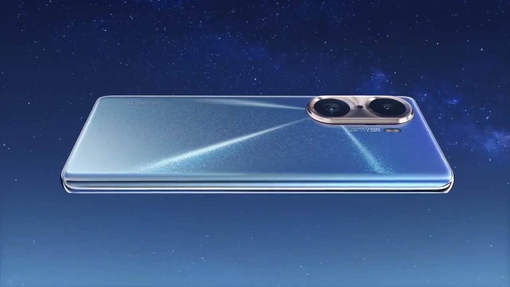
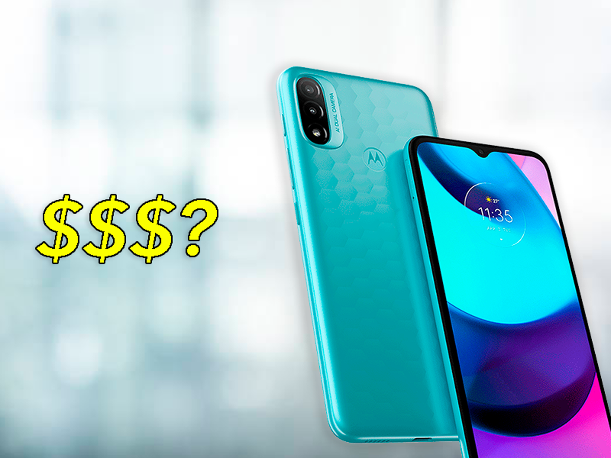
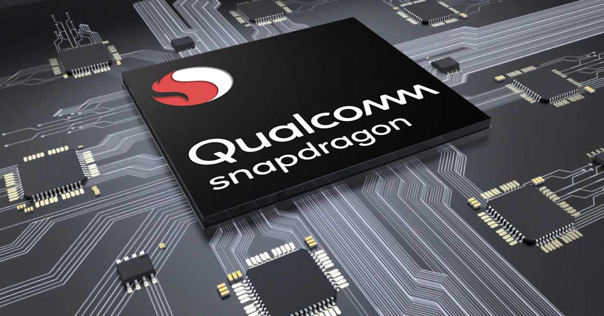

Ultimas noticias sobre Smartphones
Fecha: 29 nov
Categoria: Smartphones

El Honor 60 Pro contará con un procesador Qualcomm Snapdragon 778G+ de la mano con una memoria RAM
de 12 GB para tener velocidad en el smartphone.
Como casi todos los nuevos modelos que salen al mercado, tendrá una pantalla de tecnología OLED y
una resolución FULL HD+.
La pantalla será curva por los lados y una tasa de refresco de 120 Hz para que las aplicaciones y
juegos se vean de manera fluida.
Honor 60 Pro contará con una batería con capacidad de 4.000 mAh y una carga rápida de 66W,
prometiendo ser competitiva para el mercado actual.
Fecha: 30 nov
Categoria: Smartphones
La firma de seguridad, Check Point Research publicó un informe en el que reveló que un falló de
seguridad en dispositivos Android permite espiar a los usuarios. Sin embargo, este problema no está
en el código de Android, sino en el procesador que actualmente montan el 37% de cuota de mercado de
Android.
MediaTek es la compañía afectada por esta vulnerabilidad, por lo que CheckPoint Research alertó a la
empresa de origen taiwanés para que se parchará rápidamente la vulnerabilidad.
Fecha: 30 nov
Categoria: Smartphones
El día de hoy el fabricante de teléfonos Fairphone lanzó una actualización de sistema operativo para
el Fairphone 2, equipo que se lanzó en 2015 con Android 5, y que ahora recibirá la actualización a
Android 10 con 6 años de vida en el mercado.
La empresa, que también presume de tener los teléfonos más sustentables del mundo recalcó que de
momento esta actualización se encuentre en versión beta, por lo que la versión estable llegará a
principios de 2022, lo que significa que sería el primer Android del mundo con 7 años de soporte de
software.
Fecha: 30 nov
Categoria: Smartphones

El nuevo Moto e20 llega a nuestro país según lo que anunció Motorola para completar su nueva gama.
Un smartphone que promete por sus características y que estará disponible desde hoy con dos colores;
gris gafita y azul aqua.
Características del nuevo Moto e20
El nuevo dispositivo de Motorola tendrá una pantalla Max Vision HD+ de 6,5 pulgadas, con una
relación de aspecto de 20:9.
Como siempre es importante, la cámara trasera doble tendrá 13 megapíxeles de enfoque rápido, con un
sensor de profundidad de 2 megapíxeles.
Fecha: 29 nov
Categoria: Smartphone
Cuando los iPhone salieron al mercado los usuarios estaban realmente emocionados, sin embargo, con
el paso de los años uno de los productos insignia de Apple empezó a ser objeto de burlas por lo
frágil de sus pantallas. La historia del iPhone 13 podría cambiarlo todo.
Aunque este no fue el único factor que molestó a algunos usuarios, pues también notaron que al
reparar dispositivos por fuera de una iShop algunas funcionalidades dejaban de servir.
Expertos notaron que al reparar una pantalla rota en el iPhone 13, el Face ID dejaba de funcionar si
las reparaciones se hacían en alguna tienda no autorizada.
No obstante, Apple reconsideró su postura y dijo a The Verge que en una futura actualización de
software será posible este tipo de reparaciones sin que haya consecuencias para el usuario y desde
luego, para su equipo.
Fecha: 29 nov
Categoria: Smartphones

Elegir el mejor smartphone es importante, pero ¿sabías que un procesador puede determinar tu
experiencia con el equipo? Estas son nuestras recomendaciones.
El Buen Fin ya está aquí y una de las tendencias de compra, son los smartphones, y para poder elegir
el mejor equipo, los usuarios se centran en cámaras fotográficas, memoria y pantalla, pero, ¿sabías
que un procesador puede determinar tu experiencia con el equipo?
Si bien, algunas de las características que puede agregar un smartphone son relevantes, el
procesador es uno de los pilares que constituye al equipo, mismo que ayuda a eficientizar todos los
elementos que lo componen.
Entonces, ¿debo elegir mi celular basándome en sus características o en su procesador? Para
responder esta pregunta, charlamos con Ricardo Anaya, Gerente de Producto de Qualcomm para hablar
sobre cómo elegir un smartphone basándonos en su procesador.